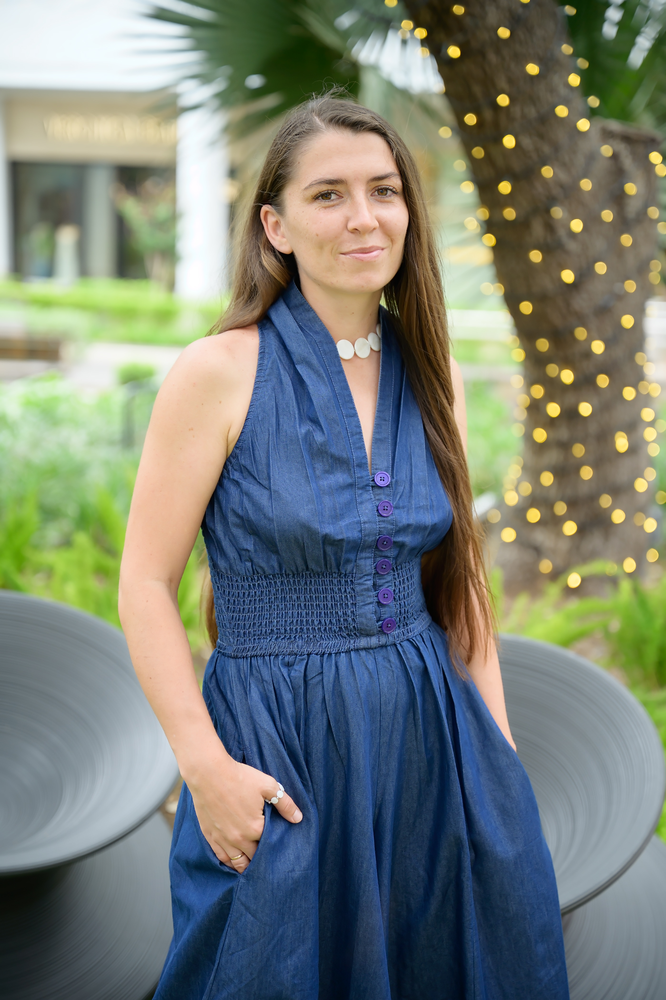

Finding your way back to your career, in a new country. Возвращение в профессию — в новой стране.
BridgeForMom supports immigrant moms with professional backgrounds who are navigating a career comeback in Greater Austin. BridgeForMom поддерживает мам-эмигранток с профессиональным опытом, которые возвращаются в карьеру в Остине.

Founder, BridgeForMom Основательница BridgeForMom
Built from my own experience.Выросло из личного опыта.
After moving across 4 countries in 4 years, I know firsthand how hard it is to rebuild a career after a move and a career break. BridgeForMom started as a personal hypothesis — right now, I'm gathering input directly from women in this situation before shaping any formal program. Переехав через 4 страны за 4 года, я хорошо знаю, как сложно восстанавливать карьеру после переезда и перерыва. BridgeForMom начался как личная гипотеза — сейчас я собираю мнения напрямую от женщин в похожей ситуации, прежде чем формировать программу.
You're not doing this alone.Ты не одна в этом пути.
BridgeForMom is about connecting with other moms navigating the same transition — sharing what's worked, what hasn't, and figuring the rest out together. BridgeForMom — это про знакомство с другими мамами, которые проходят тот же путь: делимся тем, что сработало, а что нет, и разбираемся вместе.
What we're hearing so far.Что мы уже слышим.
Early results from our community survey — shared as percentages since the sample is still small. Первые результаты опроса сообщества — в процентах, так как выборка пока небольшая.
want community & networking with other women in the same situationхотят комьюнити и нетворкинг с такими же женщинами
cite balancing childcare as their biggest barrier to returning to workназывают совмещение с уходом за детьми главным барьером
would find mock interviews helpfulсчитают полезными тренировочные собеседования
named Business English & workplace communication as a real barrierотмечают деловой английский как реальный барьер
report feeling like an impostor at least sometimesиспытывают синдром самозванца хотя бы иногда
Directions we're considering — shaped by your answers.Направления, которые мы рассматриваем — по итогам опроса.
None of this exists yet as a formal program. These are hypotheses we're testing through the survey — what actually gets built depends on what you tell us. Ничего из этого пока не существует как готовая программа. Это гипотезы, которые мы проверяем через опрос — итоговый формат зависит от того, что расскажешь ты.
Business EnglishДеловой английский
Practical language support for interviews and workplace communication.Практическая языковая поддержка для собеседований и рабочего общения.
Lectures & SeminarsЛекции и семинары
Sessions on the US job market, resumes, and workplace norms.Занятия про рынок труда США, резюме и рабочие нормы.
Mock InterviewsТренировочные собеседования
Practice runs in a low-pressure setting, with real feedback.Практика в спокойной обстановке, с честной обратной связью.
Master ClassesМастер-классы
Guest sessions from local professionals across industries.Гостевые занятия от локальных специалистов из разных сфер.
Outdoor EventsМероприятия на воздухе
Casual, in-person meetups to build real connections.Неформальные встречи вживую для реального знакомства.
Emotional & Community SupportЭмоциональная поддержка и комьюнити
A space to talk openly with people who understand the transition.Пространство для честного разговора с теми, кто понимает этот путь.
Your voice matters.Твой голос важен.
Help us understand what support would actually be useful — it takes just 5 minutes, and it's completely anonymous. Помоги нам понять, какая поддержка реально нужна — это займёт всего 5 минут, полностью анонимно.
Take the Survey Пройти опрос